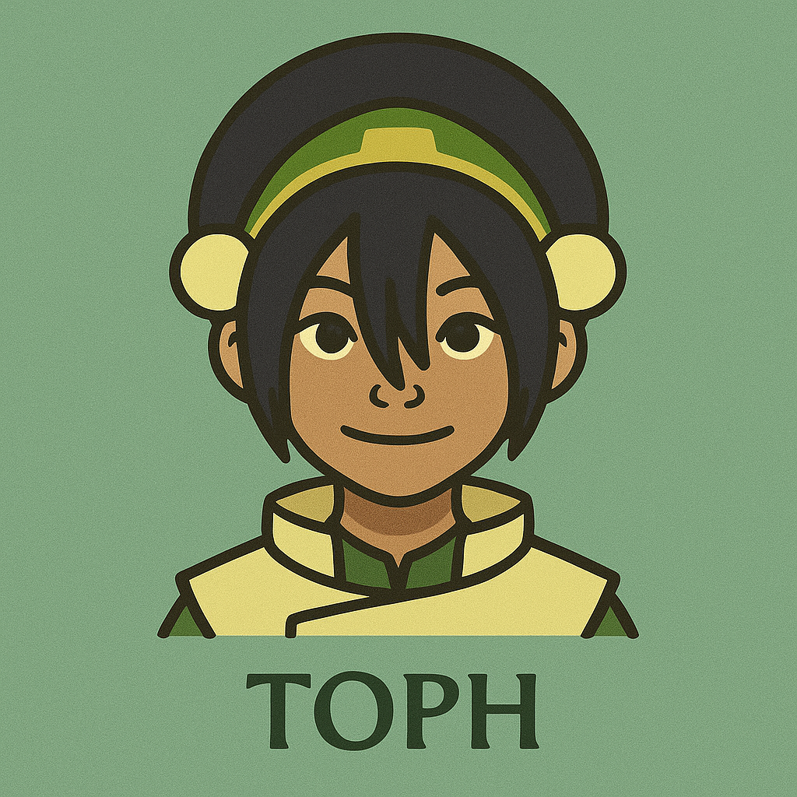

Toph
Small in size, unstoppable in strength.
Toph Beifong is a fearless and groundbreaking Earthbender who redefined what it means to be strong. Born blind into a wealthy family that sought to shelter her, Toph broke free from expectations and forged her own path, becoming the inventor of metalbending and one of the most powerful Earthbenders in history. Fierce, blunt, and wildly confident, she brings grit and attitude to Team Avatar, proving that true strength comes not from sight, but from unwavering self-belief and an unshakeable connection to the earth.